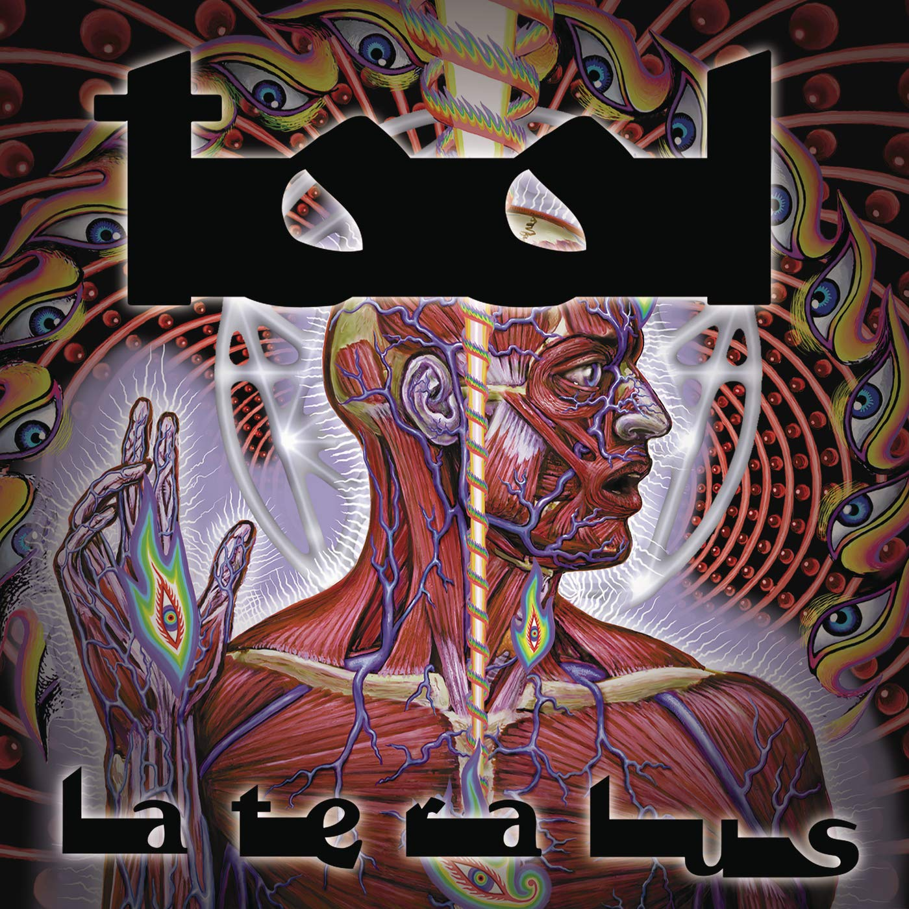

Lateralus
by Tool

Lateralus is Tool's third studio album which was released on May 15 2001, it is easily considered by many fans
and critics as their best work to date with the usual themes of Tool exploring spirituality and philosophy through
their songs and the sheer complexity of their pieces.
Their previous record prior to Lateralus was Ænima and was already considered their magnum opus at the time, with the
lengthy period between the release of Lateralus and Ænima many speculated the beginning of the end for the band's stardom.
One of the main reasons for the delay was the band's legal dispute with their record label at the time Volcano Entertainment.
The whole album overall can almost be described as a deeper understanding of ones self through their own ways in the context of each narrative of the songs, it's an almost "Awakening" from each situations each songs take place in. From the first track for example "The Grudge" is a song about well... Grudges, but specifically maturing and evetually letting it go. The album deals a lot with a Philosophical change whether it's ego death with the grudge, or the celebration from realising the beauty of life and existence with Parabola or Lateralus. It is truly an compact album filled with a bunch ideas that look through life and death, pain and joy, love and hate. It's really a record where you will keep finding something the more you listen to the record.